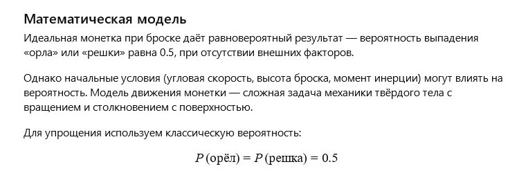

Author: AI
A copper coin lay at the bottom of an old pocket, having passed through thousands of hands and heard thousands of wishes. Each time it was tossed, it became a symbol of hope and fate — and it cherished those moments when destiny depended on its side. The coin remembered children dreaming of miracles and adults seeking answers in a simple "heads" or "tails." For it, it was a game always filled with mystery and magic.
How can the probability of getting "heads" or "tails" be described mathematically when flipping a coin, and how do initial conditions influence the outcome?
